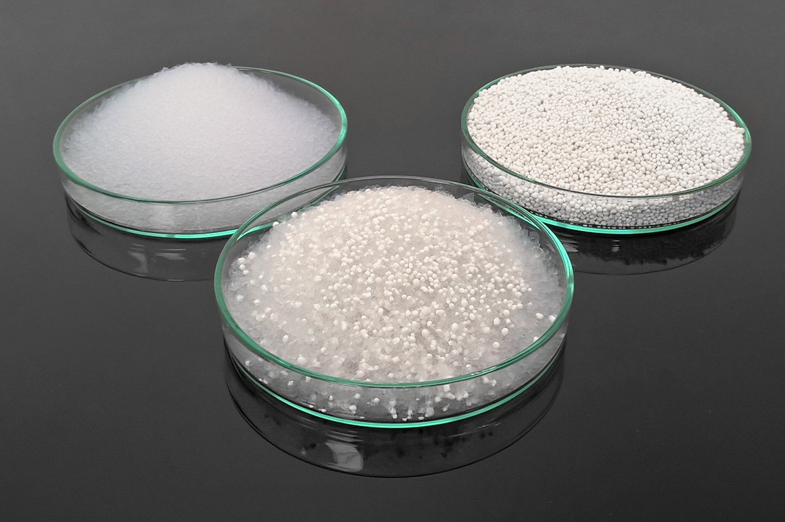

El aerogel o humo helado es un material coloidal similar al gel, en el cual el componente líquido es cambiado por un gas, obteniendo como resultado un sólido de muy baja densidad (3 mg/cm³ —miligramos por centímetro cúbico— o 3 kg/m³ —kilogramos por metro cúbico—) y altamente poroso, con ciertas propiedades muy sorprendentes, y enorme capacidad de aislante térmico. Este material está generalmente compuesto por un 90,50 a 99,98 % de aire, y es mil veces menos denso que el vidrio y unas tres veces más denso que el aire. Familiarmente, es denominado humo helado, humo sólido o humo azul, debido a su naturaleza semitransparente; sin embargo, tiene al tacto una consistencia similar a la espuma de poliestireno. Posee un índice de refracción de 1,0, muy bajo para un sólido. La velocidad del sonido a través de él es muy baja, 100 m/s (metros por segundo).